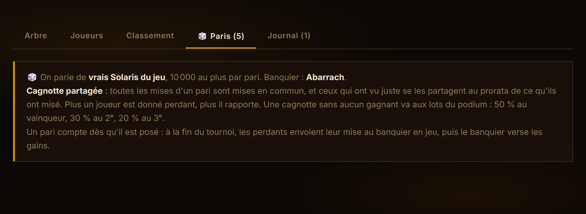
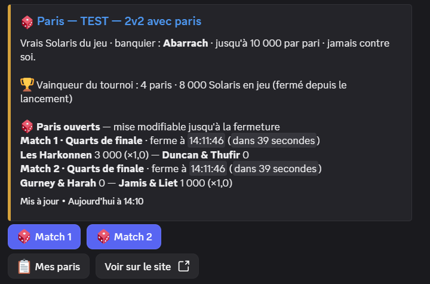
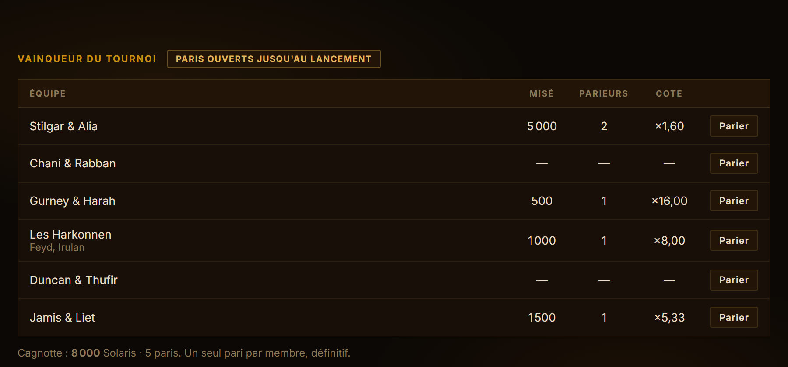
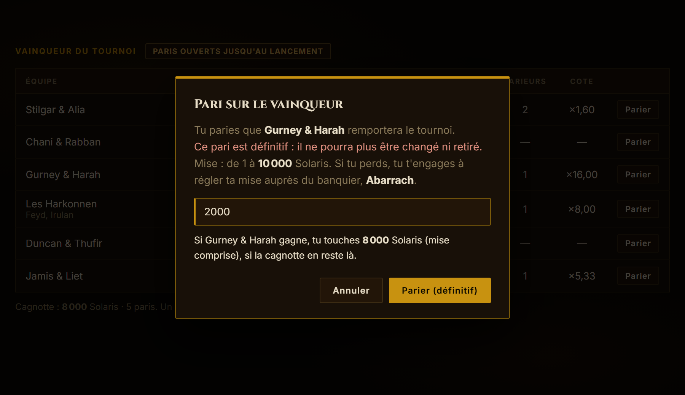
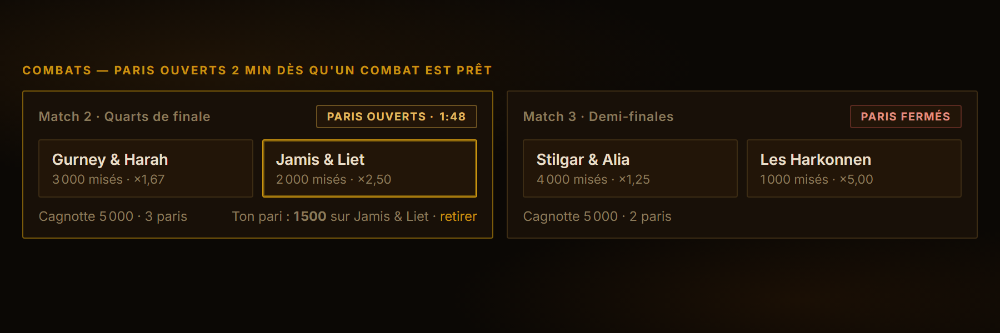
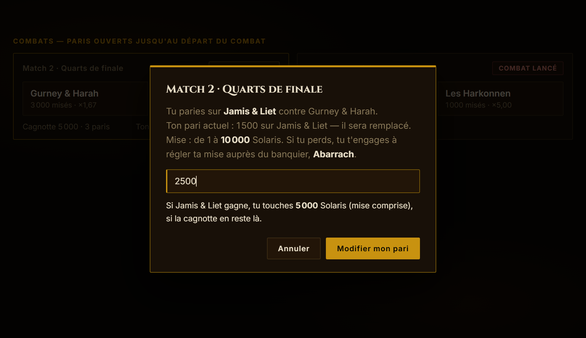
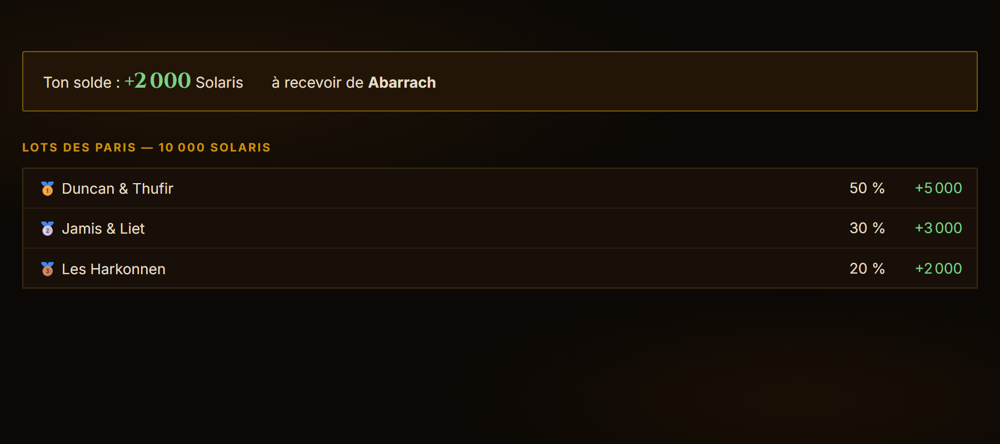

Parier sur les tournois
Pendant un tournoi, toute la guilde peut parier des Solaris, qu'on soit inscrit ou non. Il y a deux sortes de paris : le vainqueur du tournoi, à choisir avant le début, et chaque combat, jusqu'à ce qu'il commence.
Pour y aller : bouton « 🏆 Suivre le tournoi et parier » sous l'annonce Discord du tournoi, ou la page Tournois PvP, puis l'onglet 🎲 Paris du tournoi. Ou sans quitter Discord : les boutons du message 🎲 Paris du bot (voir Parier depuis Discord).
Les paris sont un choix de l'organisateur, tournoi par tournoi : un tournoi ouvert aux paris porte la pastille 🎲 Paris dans la liste.

Les deux niveaux en un coup d'œil
| ① Vainqueur du tournoi | ② Chaque combat | |
|---|---|---|
| Quand parier | Dès que l'organisateur dévoile l'arbre, jusqu'au lancement | Dès que les deux adversaires sont connus |
| Combien de paris | Un seul par personne | Un par combat |
| Changer d'avis | Non : le pari est définitif | Oui : modifier ou retirer, tant que le combat n'a pas commencé |
| Fermeture | Au lancement du tournoi | À la fin du compte à rebours : 2 min après que le combat est prêt (réglable par l'orga) |
| Gagné ou perdu | Au dernier combat du tournoi | Dès que le résultat du combat est saisi |
| Où parier | Sur le site (onglet 🎲 Paris) ou directement sur Discord : c'est le même pari | |
| On règle | À la fin du tournoi, avec le banquier, pour tous ses paris d'un coup | |
Parier depuis Discord
Le bot poste un message 🎲 Paris dans le salon des tournois dès que l'on peut parier, et le tient à jour tout au long de la soirée : combats ouverts avec leur compte à rebours, montants misés sur chaque camp et cotes, combats en cours, derniers résultats, puis le podium.
- « 🎲 Match N » (ou « 🏆 Parier sur le vainqueur ») ouvre un petit formulaire : choisis sur qui tu paries, tape ta mise (
2000,2 000ou2k). Pour changer d'avis, reclique et change la mise ; 0 retire ton pari. - « 📋 Mes paris » te montre tes paris de la soirée et s'ils sont gagnés ou perdus, puis ton solde une fois les résultats publiés.
- À la fin, le bot t'envoie ton solde en message privé : ce que tu dois au banquier, ou ce qu'il va te verser.
- Les réponses du bot ne sont visibles que de toi. Le message, lui, ne montre que des montants, jamais qui a misé.
- Ton compte Discord est relié au site : un pari posé sur Discord apparaît sur le site, et inversement. Les règles sont les mêmes partout (10 000 au plus, jamais contre soi, fermeture à la fin du compte à rebours).

Le vainqueur du tournoi
Le pari risqué : on choisit avant le premier combat l'équipe (ou le joueur, en duel) qui remportera tout. Un seul pari, impossible à changer ensuite. C'est ce qui le rend payant quand on voit juste.
- Dans le tableau, repère l'équipe de ton choix. Misé indique combien de Solaris sont déjà sur elle, Cote combien rapporte 1 Solaris si elle gagne.
- Clique Parier, tape ta mise : la fenêtre te dit tout de suite combien tu toucherais.
- Valide avec Parier (définitif).


Chaque combat
Les paris intermédiaires, au fil de la soirée. Chaque combat apparaît dans l'onglet Paris dès que ses deux adversaires sont connus. Ses paris restent ouverts 2 minutes (compte à rebours sur la carte) : tu peux parier, changer d'équipe, changer de mise ou retirer ton pari jusqu'à zéro.
- Clique sur l'équipe que tu vois gagner, tape ta mise, valide.
- Ton pari s'affiche sous le combat (cadre doré). Le lien retirer l'annule tant que les paris sont ouverts.
- À la fin du compte à rebours, la carte passe en « Paris fermés » (⚔ dans l'arbre) : plus personne ne peut parier ni changer, le combat se joue. L'organisateur peut accorder une minute de plus ou fermer plus tôt.



Combien on gagne : la cagnotte partagée
Toutes les mises d'un même pari forment une cagnotte. Ceux qui ont vu juste se la partagent, chacun au prorata de ce qu'il a misé. Le banquier ne garde rien.
Exemple : le Match 2 de la capture
- Cagnotte
- 5 000 Solaris : 3 000 sur Gurney & Harah, 2 000 sur Jamis & Liet
- Ta mise
- 1 500 sur Jamis & Liet
- Jamis & Liet gagnent
- tu touches 1 500 × 5 000 ÷ 2 000 = 3 750, soit +2 250 de bénéfice
- Ils perdent
- tu dois ta mise : −1 500
C'est la cote affichée (×2,50) : 1 Solaris misé en rapporte 2,50, mise comprise.
À la fin du tournoi : le règlement
Un pari compte dès qu'il est posé, mais rien ne se paie avant la fin. Ton encart indique ton solde de toute la soirée : ce que tu dois envoyer au banquier en jeu, ou ce qu'il va te verser.
Si personne n'a parié sur le gagnant d'un pari, sa cagnotte va aux lots du podium :

Les règles du jeu
- Les participants parient aussi, mais jamais contre eux-mêmes : dans leurs propres combats, seulement sur leur équipe (sur eux-mêmes en duel). Le vainqueur du tournoi et les autres combats leur sont ouverts comme à tout le monde.
- 10 000 Solaris au plus par pari : que ça reste un jeu.
- Chacun voit combien est misé sur chaque équipe. Qui a misé quoi, seul l'organisateur le voit, puisqu'il encaisse.
- Si un score est corrigé, les gains se recalculent tout seuls. Un pari posé sur un combat qui n'a finalement pas lieu est annulé.
- L'organisateur peut annuler un pari mal saisi (10 000 au lieu de 1 000, par exemple).